SleepUrchin
A nature-inspired noise machine that aids sleep.
A nature-inspired noise machine that allows the person to play a tune or podcast, and
adjust the level of background white noise added to the audio.
This project was an exercise in human-object interaction, discovering the audio world, and chasing beauty through patterns in nature.
Time
| |
Team |
Individual |
Role |
ID, Interaction, CMF |
Tools |
SolidWorks, Keyshot, IdeaMaker, FDM Printer, Adobe Illustrator |
 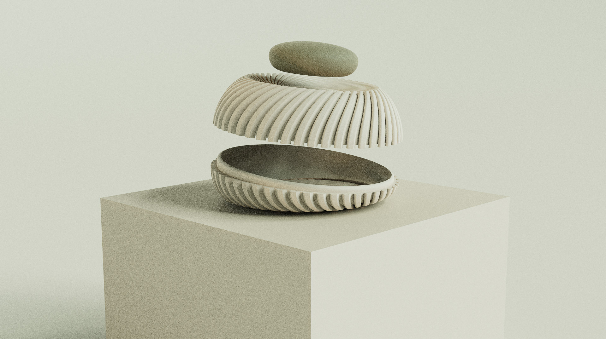
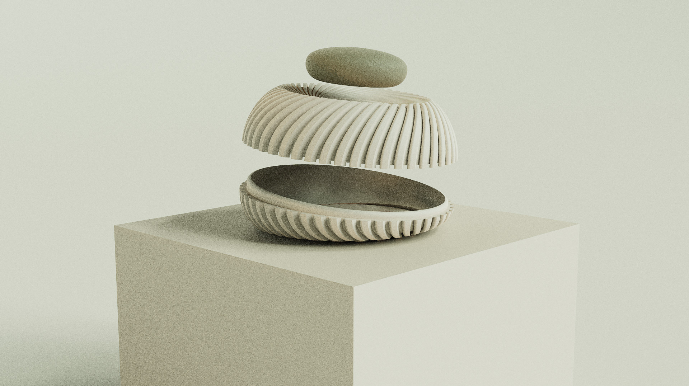

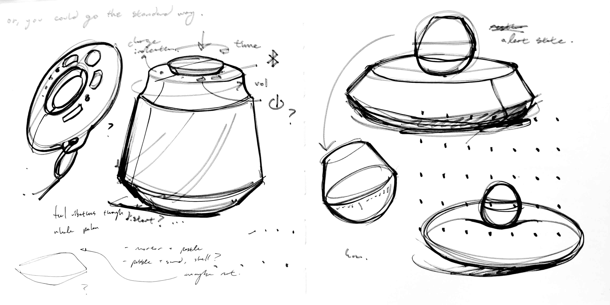
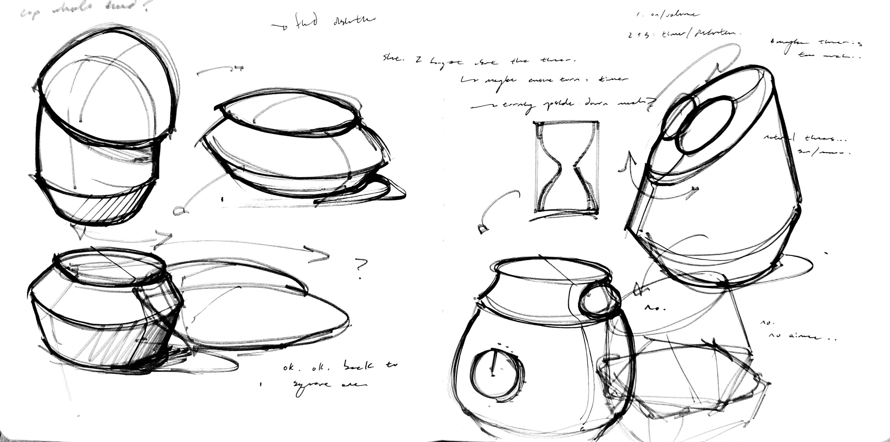
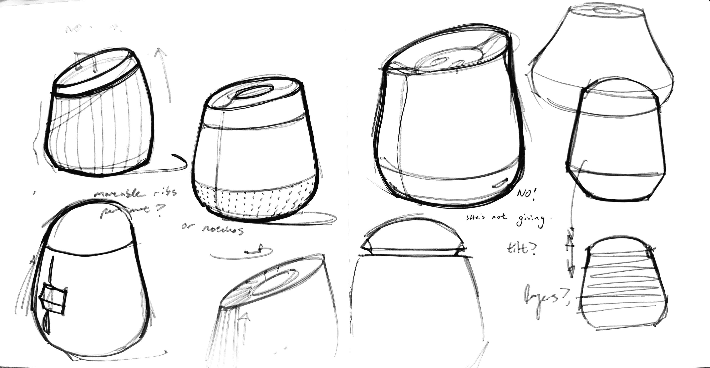
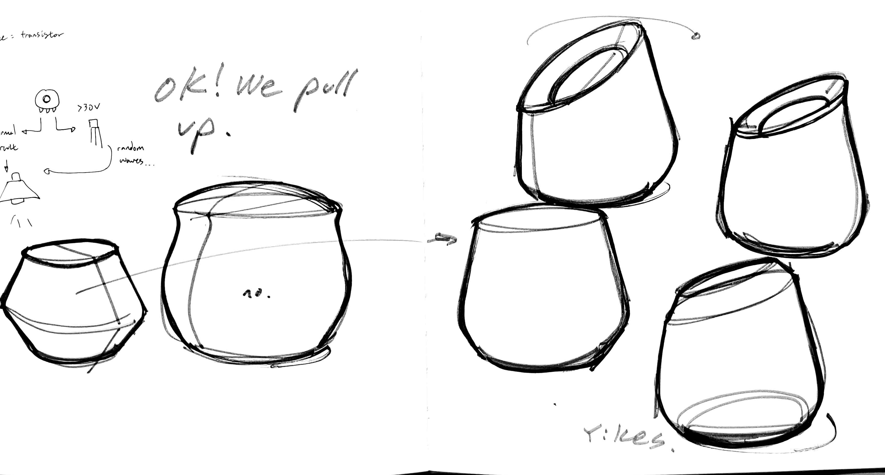
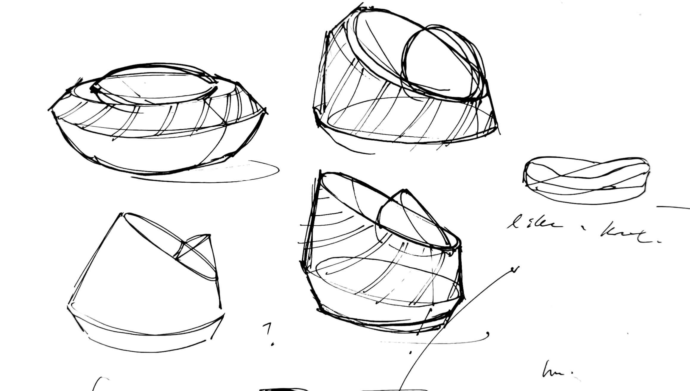
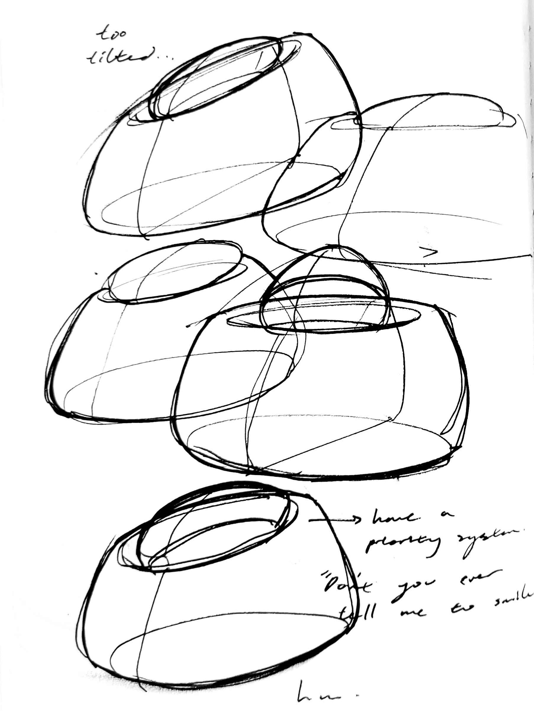
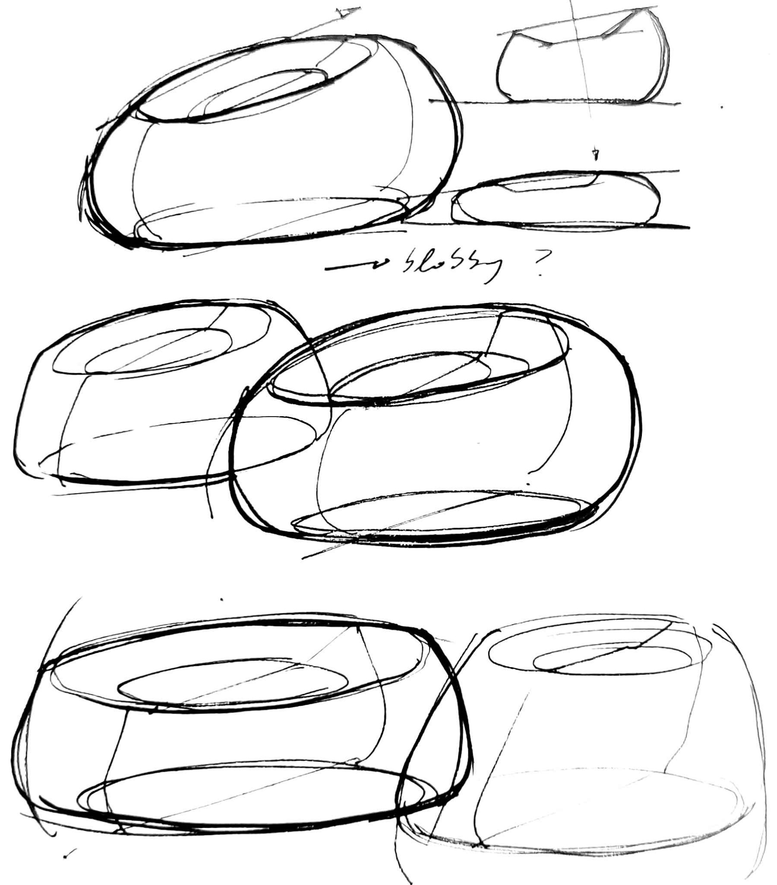
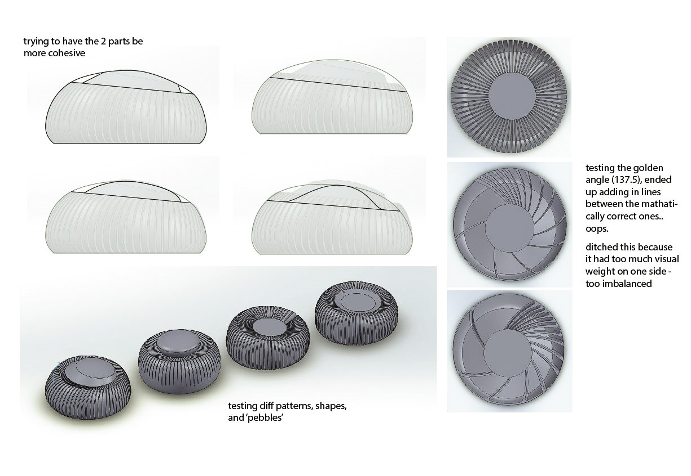
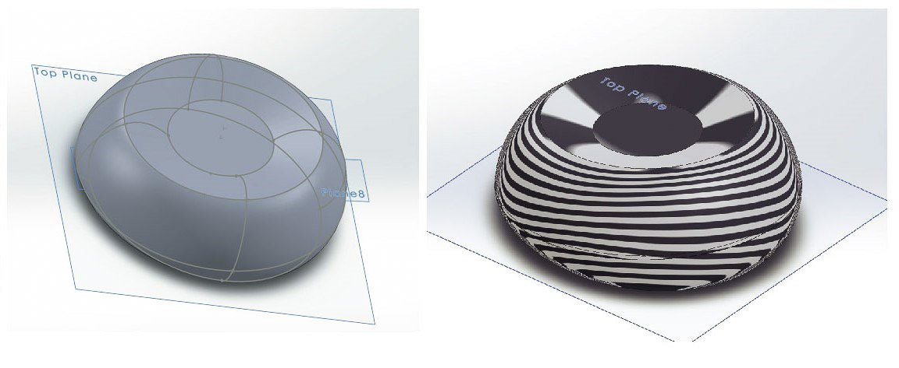
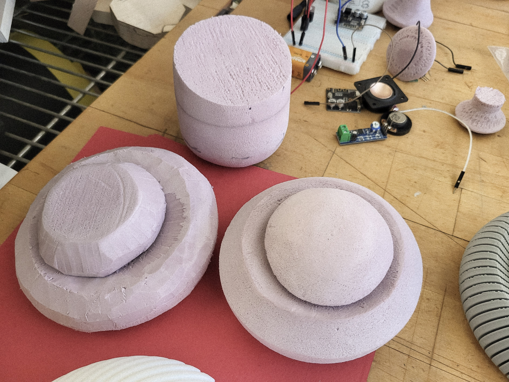
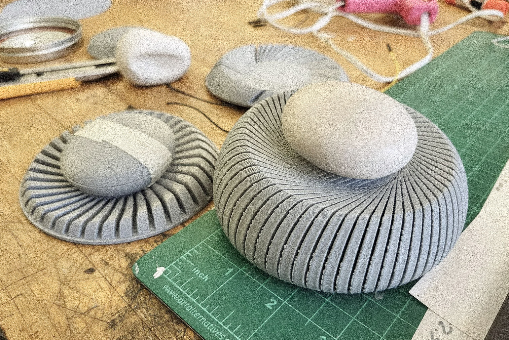